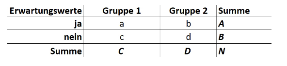

Formeln
Relative Häufigkeit
\[ \%k = \frac{fk}{n}*100\% \]
Gültige Prozentwerte bei Häufigkeiten
fk = Absolute Häufigkeit
nv = Gültige Anzahl an Werten \[ \%kv = \frac{fk}{nv}*100\% \]
Winkel eines Kreisauschnittes berechnen
\[ \gamma k = \frac{\%k * 360\circ}{100\%} \]
Medianwert oder Zentralwert
- Ist derjenige Wert
unter und über dem gleichviele Fälle liegen - Ist
unempfindlich gegenüber Ausreissern - Wird ab
Ordinalskalenniveau verwendet
Berechnung für ungerade Anzahl N
\[ Md = x[\frac{N + 1}{2}] \]
Berechnung für gerade Anzahl N
\[ Md = \frac{x[\frac{N}{2}] + x[\frac{N}{2} + 1]}{2} \]
Arithmetischs Mittel
- Bekanntes Mass der zentralen Tendenz
- Darf nur
bei metrischem Skalenniveau berechnet werden - Anfällig gegenüber Ausreissern
\[ x = \frac{(x1 + x2 + x3 + ... + xn)}{n} \]
Gewichtetes arithmetische Mittel
- Wird bei
primären Häufigkeitstabellen verwendet
K = Anzahl der unterschiedlichen Kategorien
n = Anzahl der gültigen Fälle
fk = Häufigkeit in der Kategorie k
\[ x = \frac{1}{n}\sum_{k=1} fk * k \]
Arithmetischer Mittelwert bei sekundären Häufigkeitstabellen
Lässt sich nur ungefähr berechnen, da bei der Intervallbildung bereits Informationen verloren gehen.
K = Anzahl der Intervalle Mk = Mittelpunkt des Intervalls k fk = Anzahl Fälle im Intervall k
\[ \bar{x} \approx \frac{1}{n} \sum_{k=1} fk* Mk \]
Hieraus kann auch wieder n abgeleitet werden:
\[ \sum_{k=1}fk = n \]
Modalwert
- Wird bei
Nominalskalenverwendet - Hat aber in der Forschung
keine praktische Bedeutung, da er nur denhäufigsten Wert beschreibt und die Umgebung ausser Acht lässt.
Spannweite / Variationsbreite
- Ist die Differenz wischen dem kleinsten und dem grössten Wert
- Gibt Auskunft über die Verteilung zwischen den Extremwerten
- Ist anfällig für Ausreisser
\[ R = x_{max} - x_{min} \]
Quartilabstand
Geordnete Messwertreihewird invier gleich grosse Teileaufgeteilt (Q1 - Q4)- Zwischen den Quantilen Q3 und Q1 iegen
50% der Fälle
\[ QA = Q_3 - Q_1 \]
Varianz
- Berechnet sich
aus allen Einzelwerten und Beschreibt somit die gesamte Variabilität der Werte - Die Varianz ist die Summe der Abweichungsquadrate vom Mittelwert dividiert durch die Anzahl der Fälle
\[ s^2 = \frac{1}{n} \sum_{i=1}(xi-\bar{x})^2 \]
Standardabweichung
- Berechnet sich aus der Wurzel der Varianz
- Es resultiert eine Grösse in der Ursprünglichen Einheit
\[ s = \sqrt{s^2} = \sqrt{\frac{1}{n} \sum_{i=1} (xi - \bar{x})^2} \]
Z-Wert
- Damit kann beurteilt werden, wo in der
Verteilung die Werte liegen - Der Z-Wert kann anschliessend in eine Wertetabelle eingegeben werden: Link. Anschliessend weiss man
wie viel Prozent als unter dem Mittelwert liegen
\[ z = \frac{x - \bar{x}}{s} \]
Tatsächlicher Wert
Um den tatsächlichen Wert zu berechnen muss der z-Wert (abhängig vom Alpha Niveau) mit dem Standardfehler multipliziert werden. Bei einem Alpha Niveau von 5% ist der z-Wert 1.96.
Itemschwierigkeit
Pi beschreibt die Itemschwierigkeit, d.h. Pi = 0 bedeutet, dass keine Person die Aufgabe lösen konnte
- Eine Faustregel ist, dass die
Schwierigkeit der Items zwischen 20 und 80 liegen sollte
\[ P_i = \frac{\bar{x}_i - min(x_i)}{max(x_i) - min(x_i)} * 100 \]
Wenn Minimumwert = 0
\[ P_i = \frac{\bar{x}_i}{max(x_i)} * 100 \]
Reliabilität
\[ r_{tt} = \frac{\sigma^2(x) - \sigma^2(\epsilon)}{\sigma^2(x)} \]
Standardfehler
\[ \sigma_{\bar{x}} = \sqrt{\frac{\sigma^2}{n}} \]
Anders umgeformt ergibt sich für den Standardfehler
\[ SE = \frac{s}{\sqrt{n}} \]
Ermittlung Populationsvarianz (falls nicht bekannt)
\[ \sigma^2 = \frac{s^2n}{n-1} \]
Konfidenzintervall
Standardfehler muss mit dem z-Wert der Grenze multipliziert werden. Beispiel 90% Intervall (pro Seite entfallen dann jeweils 5% der Stichprobenmittelwerte):
\[ Links = (-z_{90\%} \sigma\bar{x}) \]
\[ Rechts = (+z_{90\%} \sigma\bar{x}) \]
Anzahl Gruppenvergleiche
K = Anzahl der Kategorien des Prädikators
\[ \frac{1}{2}K^2 - \frac{1}{2}K \]
Beispiel: Überprüfung ob sich die Leistung von Maturanden in der Basisprüfung in 62 Kantonsschulen unterscheidet:
\[ \frac{1}{2}62^2 - \frac{1}{2}62 = 1891 \]
Mean Square berechnen (Tukey Test)
Sum of Squares (SS) dividiert durch Anzahl Freiheitsgrade (df)
Relative Position
\[ \sum_{i=1}(x_i - \mu_x)(y_i - \mu_y) \]
Geradengleichung
b0 = Achsenabschnitt (Schnittpunkt der Gerade mit Y-Achse)
b1 = Steigung der Geraden
\[ Y = b_0 + b_1X \]
Kleinste Quadrate
Die Grundformel für die Methode der kleinsten Quadrate ist: \[ \sum e_i = \sum (y_i - \bar{y_i}) \]
Ersetzt man jedoch \( \bar{y_i}\) durch die Geradengleichung erhält man eine neue Formel. Die Formel bekommt ihren Namen, weil nicht die Abweichungen sondern die quadrierten Abweichungen minimiert werden.
\[ \sum e_i^2 = \sum (y_i - (b_0 + b_1*x_i))^2 = min \]
Standardisierte Z-Werte
\[ \beta_i = b_i \frac{s_{xi}}{s_y} \]
Bestimmheitsmasse \( R^2))
SSreg = Sum of Squares of Regression
SStot = Sum of Squares total
\[ R^2 = \frac{SS_{reg}}{SS_{tot}} \]
Effekgrösse
- 0.2 = kleiner Effekt
- 0.5 = mittlerer Effekt
- 0.8 = grosser Effekt
\[ \epsilon = \frac{\bar{x}_A - \bar{x}_B}{s} \]
Chi-Quadrat
Bei einem Chi-Quadrat Test ist die Grundlage eine Vierfeldertafel

\[ \chi^2 = \frac{N(ad - bc)^2}{ABCD} \]
Wichtig die Anzahl der Freiheitsgrade hängt davon ab wie viele Zellen frei varriieren können
Der kritische Wert kann aus der Tabelle abgelesen werden mit alpha Wert von 5% und der Anzahl der Freiheitsgrade.